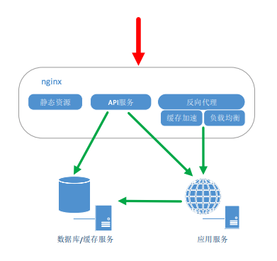
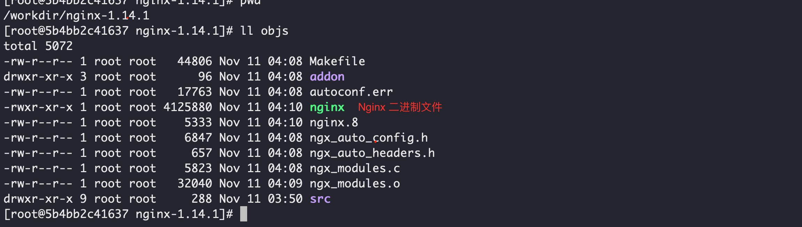
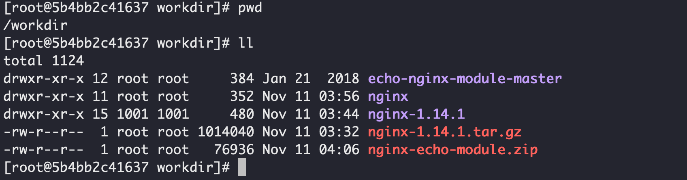
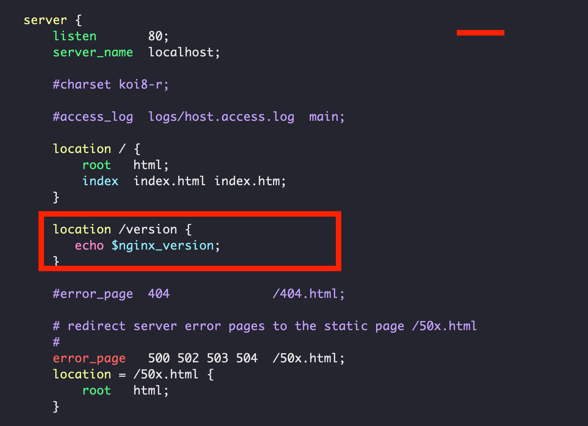
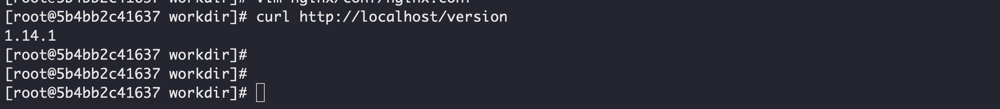
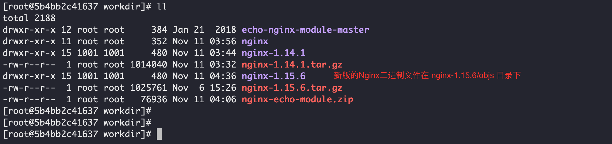
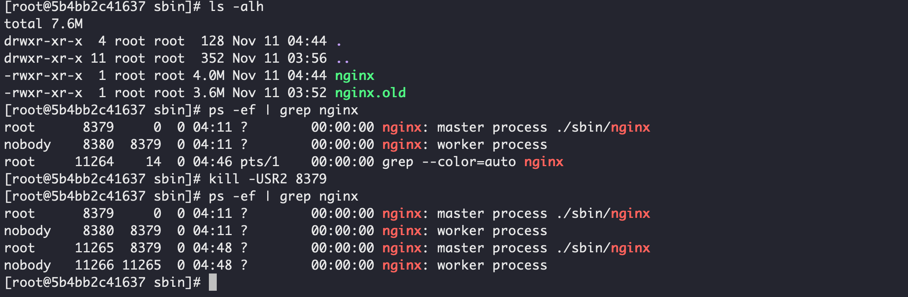
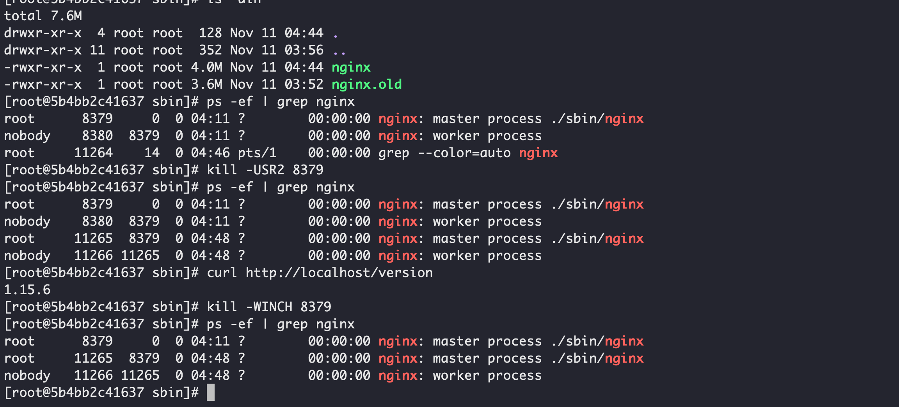

环境准备
我准备使用 docker 准备我的学习环境，以供我试验测试，也不怕玩坏，更不用去倒腾虚拟机，麻烦。
- 我们先拉取
centos的最新镜像：docker image pull centos - 创建一个数据卷用于存放容器中产生的文件：
docker volume create centos - 启动我们的容器：
docker run -d -it -v centos:/workdir --name centos centos /bin/bash - 进入我们的容器：
docker exec -it centos /bin/bash
Nginx 的主要应用场景
- 静态资源服务，即通过本地文件系统提供服务；
- 反向代理服务，提供缓存，负载均衡功能；
- API服务，通过Openresty直接访问数据库；

Nginx 的组成部分
- Nginx 二进制可执行文件；
- Nginx.conf Nginx 配置文件，控制Nginx的行文；
- access.log 访问日志，记录一条 http 请求信息；
- error.log 错误日志；
热部署
为了便于演示，我们在编译Nginx的时候添加echo-nginx-module模块，记录一次编译（我所有的操作都是在目录 /workdir下）：
源代码下载页面：http://nginx.org/en/download.html，我们先下载 1.14.1 版本，然后升级到 1.15.6 最新版；
下载源代码并且解压，
wget http://nginx.org/download/nginx-1.14.1.tar.gz，然后tar -xzvf nginx-1.14.1.tar.gz下载 nginx-echo-module，
wget https://github.com/openresty/echo-nginx-module/archive/master.zip -O nginx-echo-module.zip，并且解压：unzip nginx-echo-module.zip我们开始编译，
./configure --prefix=/workdir/nginx --add-module=/workdir/echo-nginx-module-master结束之后，我们执行：
make，这时候nginx已经编译好，在objs目录下，例如：
首次编译，我们执行
make install安装我们执行的目录：/workdir/nginx至此将看到如下的目录结构：

修改Nginx的配置文件让其输出版本号，便于以后升级比较，
vim nginx/cong/nginx.conf：
利用我们添加的
echo模块中包含的echo指令输出 Nginx的版本号。启动 Nginx （执行命令
./nginx/sbin/nginx）之后，我们访问:http://localhost/version，将会看到：
我们下载
1.15.6版本，并且编译好，编译的时候依然带上echo模块，但不要执行make install，将会看到如下结构：
由于热更新只是替换二进制文件，但是我们在操作之前先备份旧的二进制文件：
cp ./nginx/sbin/nginx ./nginx/sbin/nginx.old使用新版的Nginx二进制文件替换掉当前正在使用中的：
cp -f nginx-1.15.6/objs/nginx ./nginx/sbin/nginx发送信号至正在运行的Nginx，告诉它我们要进行热部署，升级Nginx，
kill -USR2 MasterPID
这个时候会使用新的二进制文件新起一个
master进程，并且将新的请求转到新的worker进程中处理，旧的master和worker虽然仍然存活，但已经不再监听相应的端口并且接受请求了，这个时候我们在查看版本号，就是升级之后的版本了：[root@5b4bb2c41637 sbin]# curl http://localhost/version 1.15.6关闭老的
worker进程，发送信号给旧的MasterPID，kill -WINCH MasterPID：
可以看到老的worker进程已经关闭了，但是此时老的master进程依然存在，是因为如果升级有问题，我们还可回退。回滚的时候，向老的 master 进程发送
HUP信号，向新的 master 发送QUIT信号。如果正常升级之后，应该给老的 master 进程发送
QUIT信号，使其优雅退出。
nginx 命令行
nginx -s quit优雅退出进程nginx -s stop立即退出进程
nginx 常用配置学习
配置静态资源访问服务器
1 | server { |
记录 access 日志
使用 ngx_http_log_module 模块我们来配置记录访问日志：
1 | http { |
开启 gzip 压缩
使用 ngx_http_gzip_module 提供的功能，对静态文件进行压缩
1 | http { |
开启防盗链
使用 ngx_http_referer_module 提供的功能实现防盗链：
1 | location ~ .*\.(gif|jpg|jpeg|png|bmp|swf)$ |
反向代理
使用 ngx_http_upstream_module 模块提供的 upstream 来配置上游服务器：
1 | upstream local { |
指定某些路径配置反向代理，使用ngx_http_proxy_module提供的指令：
proxy_cache_path 配置缓存存储路径：
1 | proxy_cache_path /tmp/nginxcache levels=1:2 keys_zone=my_cache:10m max_size=10g inactive=60m use_temp_path=off; |
1 | location / { |
配置指令
location
location 配置指令是由 ngx_http_core_module 模块提供，它的配置是下面这个样组的：
1 | 语法: location [ = | ~ | ~* | ^~ ] uri { ... } |
它主要是用于根据请求 URL 设置配置，在解码以 ％XX 形式编码的文本，解析对相对路径组件 .和..的引用，并将两个或多个相邻斜杠/的可能压缩为单个斜杠之后，对规范化的URI执行匹配。
一个location 可以被一个前缀字符串定义或者一个正则表达式，正则表达式通过 ~*(大小写不敏感) 或者 ~(大小写敏感) 指定。为了找到与给定请求匹配的 location ，nginx 首先检查使用前缀字符串定义的 location，其中有最长匹配前缀的将被使用，然后按照他们在配置文件中出现的顺序检查正则表达式，正则表达式的搜索在第一个匹配时终止，并使用相应的配置。如果未找到与正则表达式的匹配，则使用先前记住的前缀位置的配置。
location 块是可以嵌套的，但是除了下面提到的。
对于不区分大小写的操作系统（如macOS和Cygwin），与前缀字符串匹配会忽略大小写（0.7.7）。
正则表达式可以包含捕获组，用于后续的其他指令。
如果最长匹配前缀位置具有“^〜”修饰符，则不检查正则表达式。
此外，使用“=”修饰符可以定义URI和位置的精确匹配。如果找到完全匹配，则搜索终止。例如，如果频繁发生/请求，则定义location = /将加速这些请求的处理，因为搜索在第一次比较之后立即终止。这样的 location 显然不能包含嵌套 location。
我们来通过一个例子说明情况：
1 | location = / { |
/ 请求将会匹配 A，/index.html 将会匹配 B，/documents/document.html 将会匹配 C，/images/1.gif 将会匹配 D，/documents/1.jpg 将会匹配 E。
@ 用于定义一个命名 location，这样的 location 不用于常规请求处理，而是用于请求重定向。它们不能嵌套，也不能包含嵌套 location。
匹配顺序是：先精确匹配，然后前缀匹配取最长匹配，然后是正则表达式；但是如果前缀匹配到 ^~ 则不会进行正则表达式匹配，如果匹配到的最长前缀前面没有 ^~ 则会继续按声明顺序进行正则表达式匹配，取匹配到的第一个正则表达式，否则匹配前缀匹配。